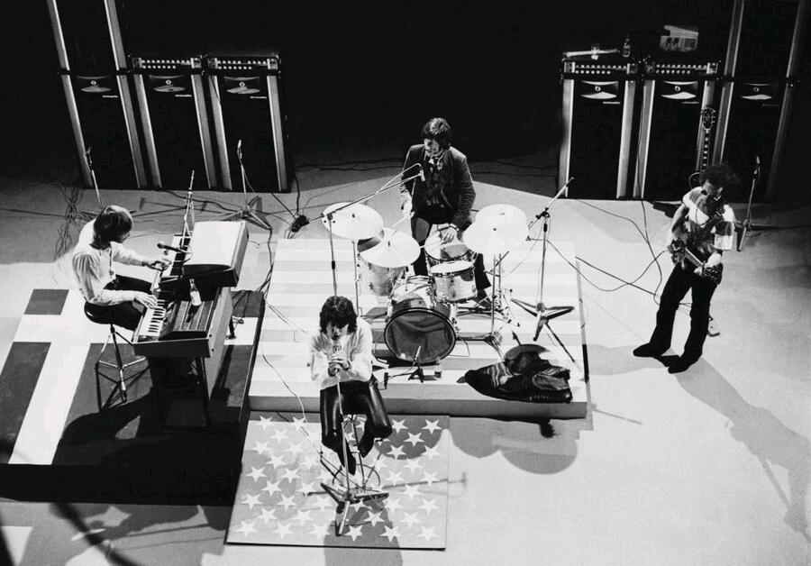

The End by The Doors started as a short goodbye song and grew into an 11 minute epic.
Jim Morrison built its darkest verses onstage, and one performance got the whole band fired.

Table of Contents
- Writing "The End" at the Whisky a Go Go
- Recording The End in the Dark
- From Album Closer to Apocalypse Now
- FAQ
Writing "The End" at the Whisky a Go Go
Morrison wrote the earliest version of The End as a farewell to Mary Werbelow, the girlfriend who had followed him from Florida to Los Angeles.
The song stayed a short breakup number until The Doors became the Whisky a Go Go's house band in 1966.
Playing five sets a night gave the band room to stretch it out, and Morrison kept adding new verses.
Morrison stayed vague about its meaning, telling one interviewer it could be almost anything you want it to be.
The Night That Got The Doors Fired
On August 21, 1966, Morrison missed soundcheck and was pulled from his apartment mid acid trip.
He insisted on playing the song early in the set instead of saving it for the close.
Partway through, he improvised the song's Oedipal spoken word section on the spot.
It drew on the Greek myth of a son who kills his father and takes his mother.
Whisky a Go Go owner Elmer Valentine fired the band that same night.
The Doors had already signed with Elektra Records, so the firing barely slowed them down.
Recording The End by The Doors in the Dark
The Doors recorded the song at Sunset Sound Recorders on September 15 and 16, 1966.
Producer Paul Rothchild and engineer Bruce Botnick ran the session.
They kept the studio lights off, with a single candle burning next to Morrison.
Robby Krieger used an open guitar tuning influenced by Ravi Shankar to make his guitar sound like a sitar.
Manzarek's organ hummed underneath like a tambura.
- Jim Morrison, lead vocals
- Robby Krieger, guitar
- Ray Manzarek, organ and Fender Rhodes piano bass
- John Densmore, drums
The Chaotic First Take
The first attempt at the song fell apart almost immediately.
Morrison, high on LSD, lay on the studio floor mumbling the wrong words.
He then hurled a television through the control room window and was sent home.
He broke back in that night, stripped off his clothes, and soaked the room with a fire extinguisher.
The band returned the next day and nailed the song in two clean takes.
Rothchild used the whole second take, with no splicing or overdubs.
He later called it one of the most beautiful moments he ever had in a recording studio.
From Album Closer to Apocalypse Now
The End closed out The Doors, released January 4, 1967 on Elektra Records.
The album reached number 2 on the Billboard 200, and the song is now certified Gold.
Rolling Stone ranked it number 336 on its 2010 list of the 500 Greatest Songs of All Time.
| Detail | Fact |
|---|---|
| Written by | Jim Morrison, Robby Krieger, Ray Manzarek, John Densmore |
| Recorded | September 15-16, 1966, Sunset Sound Recorders |
| Producer | Paul Rothchild, engineer Bruce Botnick |
| Released | January 4, 1967, on The Doors (Elektra) |
| Length | 11 minutes, 41 seconds |
| Album peak | No. 2, Billboard 200 |
| Certification | Gold, RIAA |
An Ending Written Into Apocalypse Now
Francis Ford Coppola opened and closed Apocalypse Now with the song in 1979.
His remix restored Morrison's original uncensored lyric, softened on the 1967 album to "screw the mother."
Ray Manzarek later said hearing the song open Apocalypse Now in a theater was thrilling.
Some biographers write that Morrison was listening to this album the night he died in Paris, July 1971.
FAQ
What is "The End" by The Doors about?
Morrison called it deliberately open ended, an evolving mix of breakup, death, rebirth and Oedipal myth.
How long is "The End" by The Doors?
The album version runs 11 minutes and 41 seconds.
It closes out the band's self titled 1967 debut album.
Why did the Whisky a Go Go fire The Doors?
Jim Morrison played an unusually explicit version of the song's spoken word section during an August 21, 1966 show.
Club owner Elmer Valentine fired the band that same night.
Was "The End" used in Apocalypse Now?
Yes, Francis Ford Coppola used it to open and close his 1979 film Apocalypse Now.
The film version restored a lyric that Elektra Records had softened for the 1967 album.
Who wrote "The End" by The Doors?
All four members share the writing credit: Jim Morrison, Robby Krieger, Ray Manzarek and John Densmore.
Morrison wrote the earliest lyrics, and the arrangement grew out of the band's live shows at the Whisky a Go Go.
A song that began as a farewell to one girlfriend outgrew every other track The Doors ever recorded.
It anchors The Doors' debut album and still defines the darker edge of psychedelic rock.
The band followed it with a very different kind of epic in Light My Fire.
Wikipedia's entry on the song covers its full recording history.
The End by The Doors remains the most ambitious closing track of the entire decade.
Back to the 1960smusic.net homepage to explore every genre of the decade.